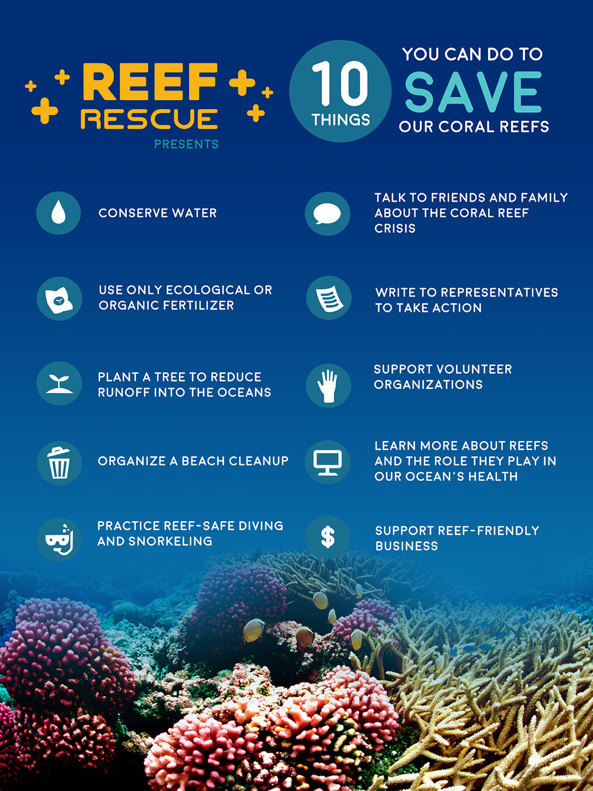
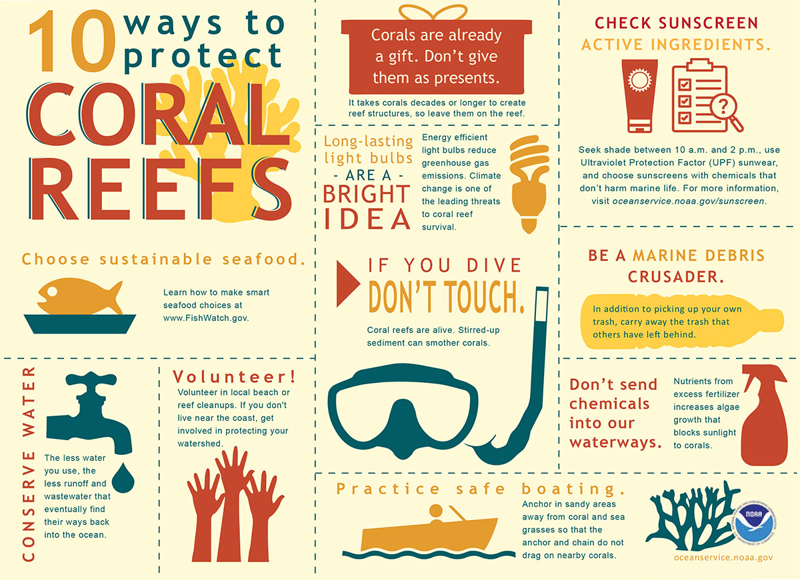

Protecting corals requires a combination of individual actions, community involvement, policy changes, and global efforts to address underlying threats.


Practice Responsible Diving and Snorkeling:
Avoid touching or stepping on corals while diving or snorkeling, as physical contact can damage them.
Practice buoyancy control to avoid accidentally kicking or bumping into corals.
Follow local guidelines and regulations for diving and snorkeling to minimize your impact on coral reef ecosystems.
Reduce Pollution
Properly dispose of trash and avoid littering, especially plastics, which can suffocate and harm corals.
Use environmentally-friendly products and reduce your consumption of single-use plastics to prevent pollution runoff into marine environments.
Support initiatives and policies that promote waste management, recycling, and pollution reduction efforts in coastal communities.
Conserve Water
Conserve water at home to reduce the amount of wastewater and runoff that ends up in coastal areas, which can contribute to pollution and coral reef degradation.
Support water conservation initiatives in your community and advocate for sustainable water management practices to protect freshwater sources that feed into marine ecosystems.
Choose Sustainable Seafood
Make informed choices when purchasing seafood and choose sustainably sourced options to reduce the demand for overfished species and minimize the impacts of fishing on coral reef ecosystems.
Look for seafood certification labels, such as Marine Stewardship Council (MSC) or Aquaculture Stewardship Council (ASC), which indicate that the seafood was harvested or farmed sustainably.